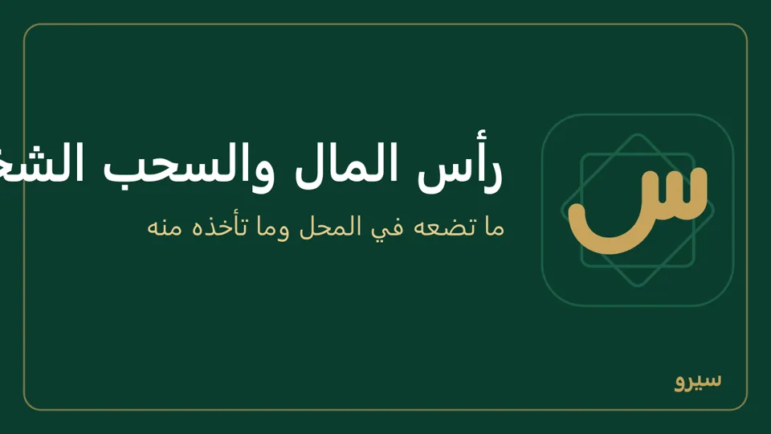

رأس المال والسحب الشخصي
- أول مرة: العمليات اليومية ← رأس مال واكتب المبلغ الموجود في الصندوق اليوم.
- ما تأخذه لنفسك من الصندوق: سحب شخصي. لا يُحسب مصروفاً، فيبقى الربح صحيحاً. وبضاعة تأخذها للبيت: بضاعة للمحل أو للبيت.
- تصفير الصندوق: لا يوجد زر يصفّره، فهو يبقى رصيداً يبيّن ما دخل وما خرج. إن أخذت ما فيه لنفسك سجّل سحب شخصي بكامل الرصيد فيصير صفراً. وإن نقلته إلى البنك: إيداع من الصندوق إلى البنك.
- رصيد الصندوق في البرنامج لا يطابق ما في الدرج في أول العمل (نسيت نقد أول المدة، أو سجّلته خطأ): عدّ ما في الدرج. إن كان البرنامج أقل سجّل الفرق رأس مال، وإن كان أكثر سجّل الفرق سحب شخصي، فيصير رصيده مثل الدرج دون أن يمس الأرباح. وفي الصندوق بالسالب معناه أن البرنامج سجّل نقداً خرج من الدرج أكثر مما سجّل أنه دخله، والدرج الحقيقي لا يكون بالسالب: غالباً لم يُسجَّل نقد أول المدة، أو فاتورة شراء أو مصروف سُجّل نقدياً من الصندوق وأنت دفعته من جيبك أو من مكان آخر. الحل نفسه: عدّ ما في الدرج وسجّل الفرق رأس مال (على الجوال رأس مال / نقد أول المدة). والفرق مع السالب جمع: الدرج 8,000 وفي الصندوق بالسالب 1,700 يعني رأس مال 9,700 (8,000 + 1,700)، فيصير الصندوق 8,000 مثل الدرج. افعله وقت تعدّ الدرج، قبل أي بيع أو دفع بعده، ولترى من أين جاء اضغط في الصندوق فيفتح دفتره حركةً حركة. أما فرق يظهر عند فتح الوردية أو إغلاقها فهو عجز أو زيادة الصندوق (الوردية).

- ما هو رأس المال، ولماذا هو بالسالب في دليل الحسابات؟ رأس المال ما وضعه صاحب المحل فيه. يرتفع بـرأس مال وبما أدخلته أول المدة: بضاعة أول المدة، ورصيد افتتاحي لزبون عليه دين، ونقد أو بنك أول المدة. وينخفض بـسحب شخصي، وببضاعة تأخذها للبيت، وبرصيد افتتاحي لمورد لك عليه دين، وبتصحيح تكلفة بضاعة أول المدة إلى أقل. فإن كان ما سحبته وما عليك للموردين أول المدة أكثر مما سجّلته رأس مال وبضاعة أول المدة، صار بالسالب. الأرباح لا تدخل حساب رأس المال: تبقى في حسابات المبيعات والمصاريف، وتظهر في الميزانية تحت حقوق الملكية سطراً وحدها («ربح السنة حتى التاريخ»)، وفي دليل الحسابات تحت مجموعة حقوق الملكية سطر الأرباح المتراكمة ثم صافي حقوق الملكية، وهو ما يملكه صاحب المحل فعلاً. فرأس المال بالسالب لا يعني خسارة. لترى السبب: في الميزانية تحت «رأس المال» ما صنعه، كل نوع بسطر: رأس مال مدفوع وأرصدة افتتاحية ومسحوبات شخصية وقيود يدوية وتعديلات (سحب ألغيته يخرج من المسحوبات). ولكل قيد: اضغط «رأس المال» في دليل الحسابات فيفتح دفتره. نسيت نقد أو بضاعة أول المدة؟ سجّلها (رأس مال وبضاعة أول المدة)، فيرجع رأس المال إلى ما وضعته فعلاً.
- شركاء بنسب مختلفة: غير موجود حالياً. لا يوجد في سيرو تعريف شركاء ونسبهم، ولا يقسم الربح عليهم. الربح رقم واحد للمحل، وقسمته تُحسب خارج البرنامج، وما يأخذه أحد من الصندوق يُسجَّل سحب شخصي. لدولارات الشريك وحدها يوجد صندوق دولار ثانٍ باسمه. أما حساب رأس مال لكل شريك فموجود: في دليل الحسابات اختر تحت المجموعة 3 حقوق الملكية وأضف «رأس مال فلان» لكل شريك، ثم سجّل ما أدخله كل واحد بـقيد يدوي: الصندوق أو البنك مدين، وحساب رأس ماله دائن. وما يسحبه بالعكس على حسابه. فتظهر حصة كل شريك في الميزانية سطراً وحدها. ورأس مال وسحب شخصي من العمليات اليومية يبقيان على 31 رأس المال.
- للمالك والمحاسب.
على الجوال: الصندوق من مجموعة المال والتقارير ← رأس مال / نقد أول المدة أو سحب شخصي، ومعه التاريخ إن لم يكن اليوم.